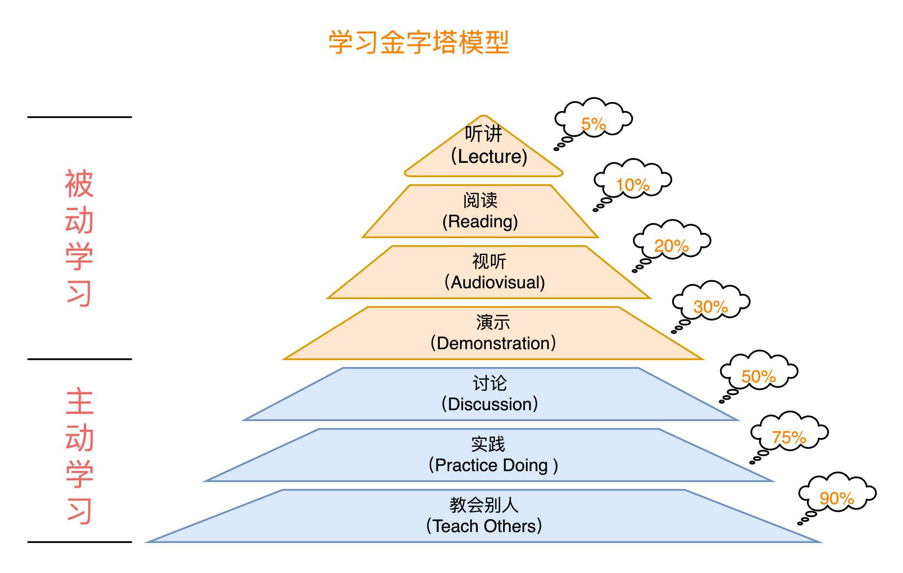

- 00 _导读 _ 什么是“The Fenix Project”？.md
- 00 开篇词 _ 如何构建一个可靠的分布式系统？.md
- 01 _ 原始分布式时代：Unix设计哲学下的服务探索.md
- 02 _ 单体系统时代：应用最广泛的架构风格.md
- 03 _ SOA时代：成功理论与失败实践.md
- 04 _ 微服务时代：SOA的革命者.md
- 05 _ 后微服务时代：跨越软件与硬件之间的界限.md
- 06 _ 无服务时代：“不分布式”云端系统的起点.md
- 07 _ 远程服务调用（上）：从本地方法到远程方法的桥梁.md
- 08 _ 远程服务调用（下）：如何选择适合自己的RPC框架？.md
- 09 _ RESTful服务（上）：从面向过程编程到面向资源编程.md
- 10 _ RESTful服务（下）：如何评价服务是否RESTful？.md
- 11 _ 本地事务如何实现原子性和持久性？.md
- 12 _ 本地事务如何实现隔离性？.md
- 13 _ 全局事务和共享事务是如何实现的？.md
- 14 _ 分布式事务之可靠消息队列.md
- 15 _ 分布式事务之TCC与SAGA.md
- 16 _ 域名解析系统，优化HTTP性能的第一步.md
- 17 _ 客户端缓存是如何帮助服务器分担流量的？.md
- 18 _ 传输链路，优化HTTP传输速度的小技巧.md
- 19 _ 如何利用内容分发网络来提高网络性能？.md
- 20 _ 常见的四层负载均衡的工作模式是怎样的？.md
- 21 _ 服务端缓存的三种属性.md
- 22 _ 分布式缓存如何与本地缓存配合，提高系统性能？.md
- 23 _ 认证：系统如何正确分辨操作用户的真实身份？.md
- 24 _ 授权（上）：系统如何确保授权的过程可靠？.md
- 25 _ 授权（下）：系统如何确保授权的结果可控？.md
- 26 _ 凭证：系统如何保证与用户之间的承诺是准确完整且不可抵赖的？.md
- 27 _ 保密：系统如何保证敏感数据无法被内外部人员窃取滥用？.md
- 28 _ 传输（上）：传输安全的基础，摘要、加密与签名.md
- 29 _ 传输（下）：数字证书与传输安全层.md
- 30 _ 验证：系统如何确保提交给服务的数据是安全的？.md
- 31 _ 分布式共识（上）：想用好分布式框架，先学会Paxos算法吧.md
- 32 _ 分布式共识（下）：Multi Paxos、Raft与Gossip，分布式领域的基石.md
- 33 _ 服务发现如何做到持续维护服务地址在动态运维中的时效性？.md
- 34 _ 路由凭什么作为微服务网关的基础职能？.md
- 35 _ 如何在客户端实现服务的负载均衡？.md
- 36 _ 面对程序故障，我们该做些什么？.md
- 37 _ 要实现某种容错策略，我们该怎么做？.md
- 38 _ 限流的目标与模式.md
- 39 _ 如何构建零信任网络安全？.md
- 40 _ 如何实现零信任网络下安全的服务访问？.md
- 41 _ 分布式架构中的可观测到底说的是什么？.md
- 42 _ 分析日志真的没那么简单.md
- 43 _ 一个完整的分布式追踪系统是什么样子的？.md
- 44 _ 聚合度量能给我们解决什么问题？.md
- 45 _ 模块导学：从微服务到云原生.md
- 46 _ 容器的崛起（上）：文件、访问、资源的隔离.md
- 47 _ 容器的崛起（下）：系统、应用、集群的封装.md
- 48 _ 以容器构建系统（上）：隔离与协作.md
- 49 _ 以容器构建系统（下）：韧性与弹性.md
- 50 _ 应用为中心的封装（上）：Kustomize与Helm.md
- 51 _ 应用为中心的封装（下）：Operator与OAM.md
- 52 _ Linux网络虚拟化（上）：信息是如何通过网络传输被另一个程序接收到的？.md
- 53 _ Linux网络虚拟化（下）：Docker所提供的容器通讯方案有哪些？.md
- 54 _ 容器网络与生态：与CNM竞争过后的CNI下的网络插件生态.md
- 55 _ 谈谈Kubernetes的存储设计理念.md
- 56 _ Kubernetes存储扩展架构：一个真实的存储系统如何接入或移除新存储设备？.md
- 57 _ Kubernetes存储生态系统：几种有代表性的CSI存储插件的实现.md
- 58 _ Kubernetes的资源模型与调度器设计.md
- 59 _ 透明通讯的涅槃（上）：通讯的成本.md
- 60 _ 透明通讯的涅槃（下）：控制平面与数据平面.md
- 61 _ 服务网格与生态：聊聊服务网格的两项标准规范.md
- 63 _ 基于Spring Boot的单体架构.md
- 64 _ 基于Spring Cloud的微服务架构.md
- 65 _ 基于Kubernetes的微服务架构.md
- 66 _ 基于Istio的服务网格架构.md
- 67 _ 基于云计算的无服务架构.md
- 春节特别放送（上）_ 有的放矢，事半功倍.md
- 春节特别放送（下）_ 积累沉淀，知行合一.md
- 用户故事 _ 詹应达：持续成长，不惧未来.md
- 结束语 _ 程序员之路.md
- 结课测试 _ 一套习题，测出你的掌握程度.md
用户故事 _ 詹应达：持续成长，不惧未来
你好，我是编辑王惠。今天是大年初六，春节假期也快要结束啦，春节玩得还开心吗？在放松的同时也别忘了要继续学习哦。
今天这一讲，我们邀请了一位优秀的同学来做分享，如果你看过之前更新的两篇春节特别放送，那应该会很熟悉他的名字@zhanyd。
其实在梳理课程留言的时候，我就注意到了詹应达同学一直在跟随周老师的脚步，学习和实践软件架构的相关知识点。留言的内容十分有见地、提出的问题也能看出是经过了他深入的思考。所以我邀请他来和我们分享一下他的学习心得与体会。
OK，下面我们就一起来看看吧！
你好，我是詹应达（zhanyd），一名工作十多年的程序员，目前在温州做制造业信息化相关的工作，很高兴能和你分享我学习这门课程的心得。
为什么要学这门课？
首先我想和你聊聊我为什么想要学习这门课。
作为一个三线城市的程序员，CRUD BOY，想在工作中不断学习、突破瓶颈，有质的飞跃？说实话，我觉得真的很难。
就拿我自己来说吧，我们公司搞开发的就那么几个人，大家的水平都差不多，都是“面向百度编程”，而且业务上只有简单的CRUD和复杂的CRUD，高并发？分布式？不存在的。要想提升技术能力的话，就只能靠自己的悟性了。
可是高并发和分布式系统在程序员的能力进阶之路上，都是绕不开的高墙。所以就算是工作中没需求，我也想要学，不然像我这种“高龄”程序员，再不往上提升的话，迟早会被市场淘汰。
然而，分布式系统是出了名的难搞，我想学，但是无从下手，在网上东看篇文章，西学点概念，都是很零碎的知识，不成体系，又没深度。再这样下去，我迟早会知难而退，对分布式系统敬而远之。
不过幸运的是，后来我在极客时间找到了周老师的课程，看了课程的目录，真是如获至宝。现在也跟着课程更新学完了一半的内容，收获颇多，老师对不同架构风格的阐释，让我可以从全局性的视角来理解分布式架构的发展历史、来龙去脉，了解各种架构技术的时代背景和探索过程，从而让我能去深入理解架构设计的本质。
而且除此之外，课程里的很多内容都有既高屋建瓴、又深入浅出的特点，就算是对架构知识的积累不够多的人，都可以做到不紧不慢地跟上老师的脚步。所以，我也想来谈谈这门课程最吸引我的三个原因。
自成体系
分布式架构内容太多、太复杂，让人望而生畏，无从下手？不要怕，这门课程的知识内容真的非常全面，它并没有像现在市面上的一些介绍分布式的书籍资料，只是着眼于一个很小的分支，而是涵盖了分布式系统的方方面面，且自成体系，既有广度，又有深度。
在课程中，周老师已经给我们画好了学习地图，按照这个地图去探索分布式架构，就一定不会迷路，而且这个地图还能让我们对分布式架构的演化历程、如何解决分布式系统难题的高手思路，以及不同的技术方案都有什么优缺点、如果对各种技术做好取舍等，都有具体化、具象化的感知，我们能够清楚地知道自己所掌握的知识程度，也能以此查漏补缺，弥补认知上的不足。
授之以渔
周老师不仅在课程中表达了自己的观点，用自己的话把架构技术知识讲解得很透彻，而且在课程里针对很多理论概念都给出了超链接，把参考资料以及思考的过程展示给我们看。
其中包括很多专业的论文，老师会找到原始的出处，带我们去看第一手资料，从技术的诞生开始，把技术的来龙去脉讲得清清楚楚，有理有据。
我平时在网上看惯了二手、三手的资料，很多内容都是互相搬运，甚至可能是错的。而老师提供的原始论文以及高质量的文章，最能接近技术的本质，信息量极大，不仅教会了我们知识，还教会了我们学习的方法，既授之以鱼，又授之以渔。
独到见解
在学习课程的过程中，我常常惊叹于老师的知识面之广、对技术的理解之深。这么多的知识点，老师都能讲得驾轻就熟，把复杂的知识概念解释得通俗易懂。
有些内容我以前找了好多资料，还是搞不懂其中的概念，而老师一两节课就讲明白了，对新人非常友好。举个简单的例子，像是CAP定理、TCC、SAGA等概念，我一直都处于懵懵懂懂的状态，而且时间一长就会觉得这都是些高深难懂的理论，大厂专用，不是我等能学会的，严重打击了我的自信心。结果老师在讲“分布式事务”这两节课的时候，就从原理上解释得清清楚楚，我一看就懂了。
还有，老师很多时候并不会囿于“术”的层面去讲解知识点，还会从“道”的层面帮我们拓展技术视野。比如我们很熟悉的奥卡姆剃刀原则：如无必要，勿增实体。这不仅体现在架构设计上，对于我们的生活来说，也是一样的道理，只有适合自己的才是最好的。可以说，周老师的课程真正做到了“道”与“术”的平衡，为我们揭开了软件架构设计的神秘面纱。
总而言之，在这门课程中，我找到了学习分布式系统的绝好资料和学习路径，手拿老师的课程地图，和同学们一起脚踏实地地学习，做到心中有数，不会迷路、不孤单。
我对于学习方法的思考
我猜，一直跟随学习课程的同学，应该对我比较眼熟，因为几乎每节课学完后，我都会来留言，不管是说说对这节课的思考也好，还是只简单地刷一下存在感也好，我都一直在坚持做这件事。
其实我这么做是有原因的。
不知道你有没有类似的感受，以前在学习其他专栏课程的时候，明明学得很认真、很仔细，每节课的知识点我都觉得理解了、学明白了，但总是过几天就会忘掉，再久一点儿就只剩一个很模糊的印象了。
后来我发现这里存在一个问题，就是从学校到职场，我们一直都在学习各种新知识、新技术，但貌似具体的学习方法却从没有系统地学习过。
而直到我接触了学习金字塔，才终于知道这是怎么回事了。

原来，人的学习分为了被动学习和主动学习两个层次。
在单纯地听讲时，人们只能记住5%的内容，阅读只能记住10%的内容，这些都是在低效地、被动地学习，所以怪不得我听过看过的内容忘得这么快。而主动地、高效地学习，是要去思考、总结和归纳，并且要找人讨论、实践，然后以教为学。
所以也就是说，我们一定要有输出，用输出来倒逼输入。这正如同周老师在开篇词里所说的：把自己“认为掌握了的”知识给叙述出来，能够写得条理清晰，讲得理直气壮；能够让别人听得明白，释去心中疑惑；能够把自己的观点交给别人审视，乃至质疑。在这个过程之中，就会挖掘出很多潜藏在“已知”背后的“未知”。
那么具体我们要如何学会主动学习呢？这里我想啰嗦一下非常著名的费曼学习法。简单来说分为四步：
- 选择一个你要了解的概念或知识点；
- 试着把它讲给10岁的小孩子听；
- 如果卡壳了，或者说不明白，就重新去查资料学习；
- 确认自己理解清楚了，再用最简洁的语言或者比喻重新讲一遍。
因此按照费曼学习法，我在开始学习课程之前就立了个Flag：每篇文章下面都要写留言，而且最好能用通俗的语言或比喻表达出来。
不得不说，写留言真的很有效果，一些看似已经明白的概念，如果用自己的话再说一次，就会发现其中的很多细节我其实根本没搞懂，我要不停地查资料，把不懂的地方搞明白，然后再试着联系生活场景来打比方，用自己的话讲出来。有时候一条一两百字的留言，我甚至要写好几个小时。
第26讲中关于我对Cookie-Session和JWT两种凭证实现方案的理解：- Cookie-Session相当于坐飞机托运了行李，只要带着登机牌就行了，但是一旦托运了行李，行李就和飞机绑定了，你就不能随意换航班了；JWT相当于坐飞机拎着行李到处跑，每次过安检还要打开行李箱检查，而且箱子太小也带不了多少东西，但优点是可以随意换航班，行李都在自己身边。
而且留言还有一个好处，就是我可以通过其他同学的提问，以及与同学们的交流讨论，再次巩固学到的知识点，让不同的思想碰撞，从而更接近学习的本质；更重要的也是能通过周老师的回复和指点，可以进一步拓展认知，收获应用、实践的经验。
周老师这样的大神，我在平时是绝无可能碰到的，能和老师近距离地交流，是非常难得的机会，要好好珍惜。
写在最后
说起来，我也算是周老师的老读者了，《深入理解Java虚拟机》读完之后收获非常大，对Java虚拟机有了全面的认识，老师总能抓住事物的本质，把问题说得明明白白，这门课程也保持了老师一贯的高品质。
周老师在课程里提到过技术人的成长捷径，就是“做技术不仅要去看、去读、去想、去用，更要去写、去说”，这让我印象非常深刻。
所以在最后，我还想说的是，我们一定要保持成长型的思维模式，也就是相信自己只要努力就可以做得更好。我一直认为，成功主要来源于尽自己最大的努力做事情，来源于主动学习和自我提高，不管我们的起点有多低，受到过多少挫折，只要我们有成长型思维，努力奋斗、不怕失败，保持终身学习、不断成长，就能在如今技术日新月异的时代，不被淘汰、不惧未来。
我都可以做到，相信你一定能行！
好了，我的分享就到这里啦，不知道你是怎么学习这门课程的？有没有什么独特的学习方法和心路历程呢？欢迎你在留言区分享，我们一起交流，相互鼓励，共同进步！
© 2019 - 2023 Liangliang Lee. Powered by gin and hexo-theme-book.